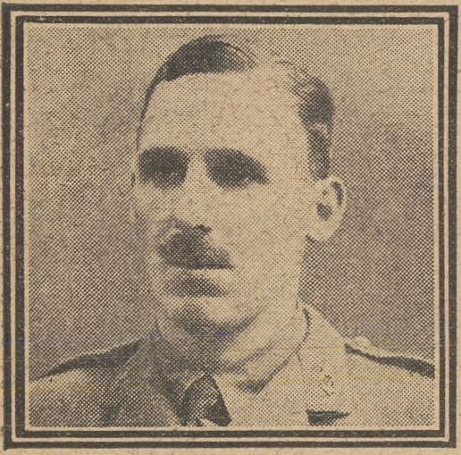
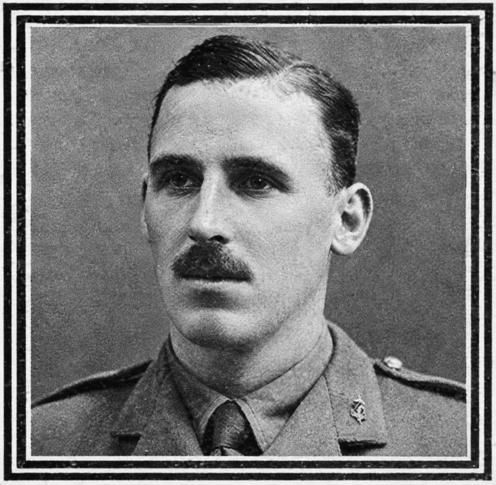

Jasper Milton Preston Muddock


Jasper Milton Preston Muddock’s life took him from his education at the Lower School of John Lyon, Harrow, to almost six years working in Burma before the First World War brought him into military service. Jasper was the son of celebrated novelist James Edward Preston Muddock, “Dick Donovan”, whose three sons all died during the war years.
Civilian Life - Jasper Milton Preston Muddock was born on 25 May 1888 at Forfar, Scotland, the son of James Edward Preston Muddock and Eleanor Muddock. His father was the well-known novelist who wrote both under his own name and under the pseudonym “Dick Donovan”, under which he became particularly popular for his detective stories. Jasper was educated at Dunstable Grammar School and the Lower School of John Lyon, Harrow. All three Muddock brothers were recorded at Dunstable Grammar School in 1901, and Jasper’s connection with John Lyon is commemorated on the school’s First World War memorials. After leaving school, Jasper spent almost six years in Burma, where he worked for Bulloch Brothers & Co. for five and a half years. During his time there he was attached to the Rangoon Mounted Rifles. He developed an interest in Burma and the Burmese and was reported to speak Hindustani, Bengali and Persian. Before leaving England for Burma, he had also been associated with the 3rd Middlesex Sharpshooters.
Military Life - Jasper returned to England in the spring of 1915 following the outbreak of the First World War. He entered the Inns of Court Officers’ Training Corps and was commissioned as a Second Lieutenant on 18 August 1915, joining the Shropshire Yeomanry. His regiment sailed for Egypt in March 1916, where it undertook duties connected with the defence of the Suez Canal. Following reorganisation in 1917, Jasper became part of the 74th (Yeomanry) Division and saw active service during the Second Battle of Gaza in April 1917. He was promoted to Lieutenant in July and subsequently took part in the Third Battle of Gaza and the operations leading to the capture of Jerusalem.
Muddock was killed in Palestine (modern-day West Bank/Israel) during the Egyptian Expeditionary Force’s Sinai and Palestine Campaign. Specifically, his death occurred in the rocky hills surrounding the village of Et Tireh (near Ramallah), just north of Jerusalem. Second Lieutenant Muddock was killed in action during a fierce Turkish counter-attack.The Shropshire Yeomanry had been dismounted and absorbed into the 10th Battalion, King's Shropshire Light Infantry (KSLI), serving under the 74th (Yeomanry) Division. On the night of November 29, 1917, Muddock’s unit marched out in the dark to occupy the strategic outpost of Et Tireh. On November 30, Ottoman forces launched a violent, determined counter offensive to halt the British advance toward Jerusalem. Cut off and facing overwhelming numbers, the unit’s commanding officer ordered a fighting retirement. Serving as the battalion's Scout Officer, Lt. Muddock was caught in the heavy exchange of gunfire and killed instantly on the battlefield alongside two fellow officers. His actions helped extricate the small British force and protect their wounded. He is buried at the Jerusalem War Cemetery (Plot E, Grave 60).
A Family of Three Wartime Deaths Jasper was the last surviving son of James Edward Preston Muddock and Eleanor Muddock. His twin brother, Horace Lionel Preston Muddock, had died at Charing Cross Hospital on 21 November 1914, aged 27, from appendicitis. His other brother, Edward Reginald Preston Muddock, was killed in action in France on 4 September 1916, aged 30, while serving with the Canadian Infantry. Jasper’s death in Palestine in November 1917 therefore meant that his parents had lost all three of their sons during the First World War years. The loss was reported in contemporary newspapers, which described Jasper as the last surviving son of the novelist J. E. Preston Muddock, “Dick Donovan.” The family’s three sons are commemorated together on the family grave at Putney Vale Cemetery, while Jasper is also remembered on the John Lyon School First World War memorial.